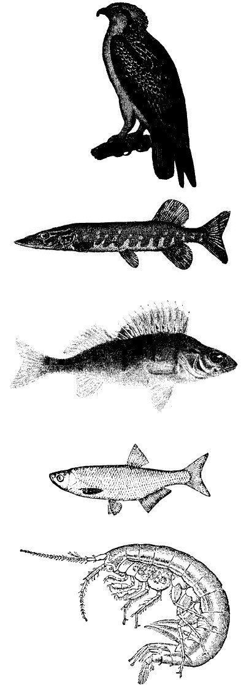

Cikli i karbonit: fotosintezë ↔ frymëmarrje, djegie Cikli i azotit: fiksimi, nitrifikimi, denitrifikimi Cikli i ujit: avullim, kondensim, reshje Baktere fiksuese të azotit (p.sh. Rhizobium) në nyjet e bishtajoreve Aktiviteti njerëzor rrit CO₂ në atmosferë